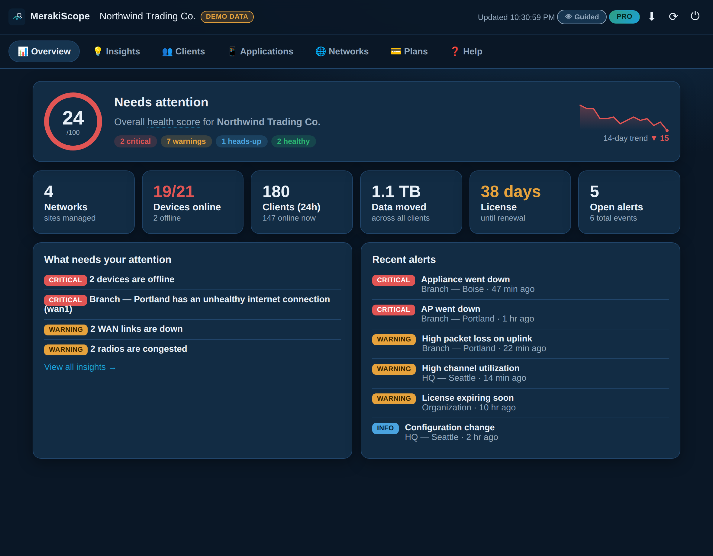
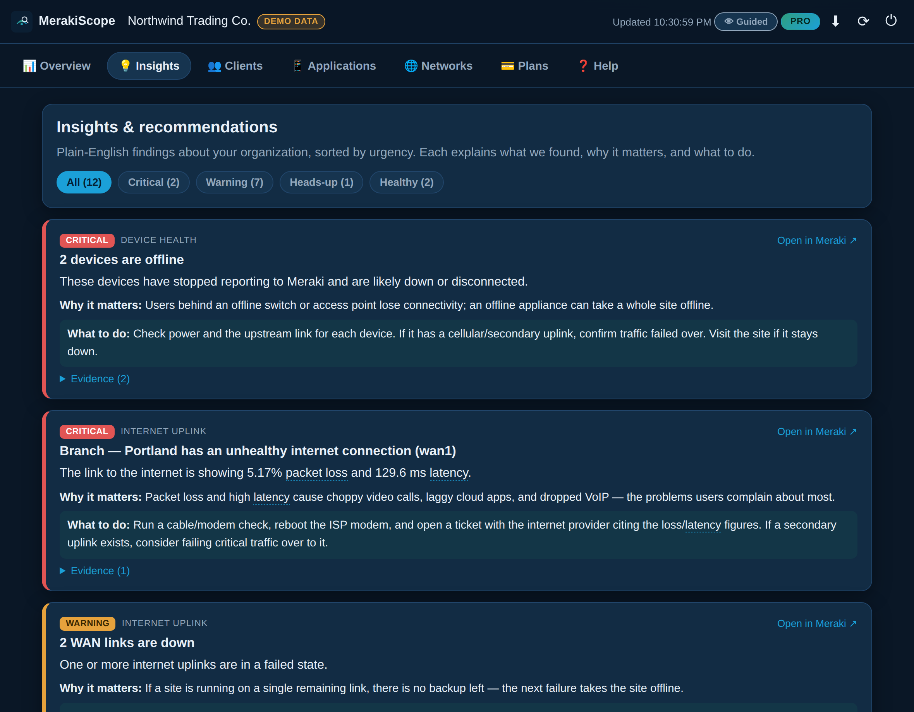
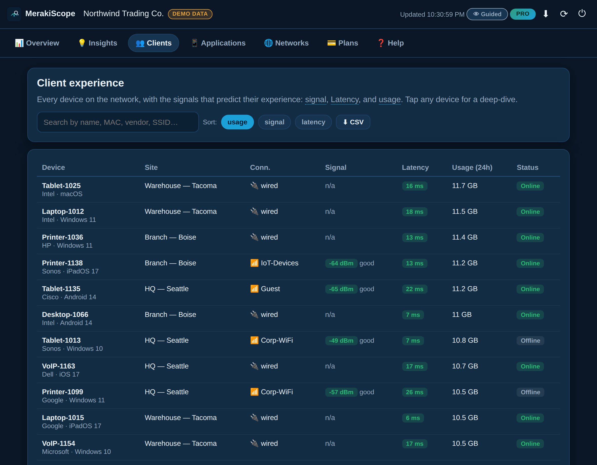

MerakiScope reads your Meraki organization and tells you what's healthy, what's broken, why it matters, and what to do about it. Built for non-technical managers and seasoned engineers alike.

“Why is the Wi-Fi slow?” “Is the internet down or is it just me?” “What changed?”
The Meraki dashboard has the data. MerakiScope turns it into an answer.
Flip a single switch to match whoever's looking.
You own the network but you're not a network engineer. MerakiScope gives you a single health score, a prioritized “what needs your attention” list, and tappable definitions for every bit of jargon. No more guessing — or waiting on hold with support.
Switch to Expert mode for the raw numbers: measured-vs-threshold on every finding, serials, firmware, MAC/IP/VLAN/SNR, CSV export, and thresholds you can tune to your environment so the tool stops crying wolf.
A 0–100 score and a one-glance dashboard of devices, clients, alerts, and licensing across every site.
Findings sorted by urgency, each with a plain-English cause and a concrete next step.
Per-device signal, latency, and usage — the signals that predict who's having a bad day.
See which apps (Zoom, M365, Salesforce…) are actually performing — and which are dragging.
Spot what's getting worse with sparklines, and export a printable health report for leadership.
Every issue deep-links straight into the Meraki dashboard so you go from “what” to “fixed.”


Try the full demo instantly, or connect your organization with a read-only Meraki API key.
See in seconds whether anything's wrong and what's most urgent across all your sites.
Follow the plain-English fix, or jump straight into Meraki via a deep-link.
The API key lives only in your browser for the session, is never saved to disk, and is wiped on disconnect.
The app refuses any non-HTTPS endpoint, so credentials never travel in the clear.
Strict Content-Security-Policy and zero third-party runtime code — nothing to phone home.
MerakiScope only reads your dashboard. Use a read-only admin key and it can't change a thing.
Start free. Upgrade when you want the depth. Per organization, cancel anytime.
forever
per organization
per organization
It has the raw data — MerakiScope turns it into a prioritized, plain-English answer with a clear next step, and presents it for both non-technical managers and engineers. It's the layer between “a wall of metrics” and “here's what to do.”
Yes. The app runs entirely in your browser and talks only to Meraki through your own connection. Your API key is never stored and is wiped when you disconnect. There's no third-party tracking and no server holding your network data.
For browser-based live access, yes — browsers block direct calls to the Meraki API (CORS), so you run a tiny relay you control. We provide a copy-paste example. The demo needs nothing at all.
Absolutely. Open it in your phone's browser and choose “Add to Home Screen” — it installs like a native app and works offline.
No. MerakiScope is an independent tool that uses the official Meraki Dashboard API. “Meraki” is a trademark of Cisco.
See your whole Meraki organization explained in plain English — right now, no signup.
▶ Launch the live demo